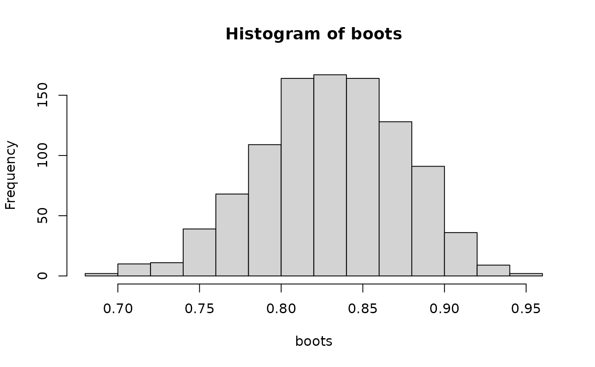

Generate bootstrap estimates of overlap
bootstrap.Rdbootstrap takes two sets of times of observations and calculates bootstrap
estimates of the chosen estimator of overlap. Alternatively, bootstrap
estimates can be calculated in a 2-stage process: (1) create a matrix of
bootstrap samples for each data set, using mm_resample(); (2) pass these
matrices to mm_boot_estimates() to obtain the bootstrap estimates.
A vector of bootstrap estimates can then be used to produce confidence intervals
with mm_boot_CI().
Usage
mm_bootstrap(
A,
B,
nb,
smooth = TRUE,
kmax = 3,
adjust = NA,
n_grid = 128,
type = c("Dhat1", "Dhat4", "Dhat5"),
cores = 1
)
mm_resample(x, nb, smooth = TRUE, kmax = 3, adjust = 1, n_grid = 512)
mm_boot_estimates(
Amat,
Bmat,
kmax = 3,
adjust = c(0.8, 1, 4),
n_grid = 128,
type = c("all", "Dhat1", "Dhat4", "Dhat5"),
cores = 1
)Arguments
- A
A numeric vector of time-of-day observations (in radians) for species A.
- B
A numeric vector of time-of-day observations (in radians) for species B.
- nb
the number of bootstrap samples required
- smooth
if TRUE, smoothed bootstrap samples are produced.
- kmax
An integer indicating the maximum number of modes allowed in the activity pattern. Default is
3.- adjust
A numeric value to adjust the bandwidth of the kernel density estimation. Default is
1.- n_grid
An integer specifying the number of grid points for density estimation. Default is
128.- type
the name of the estimator to use, or "all" to produce all three estimates. See
mm_overlap_estimates()for recommendations on which to use.- cores
the number of cores to use for parallel processing. If NA, all but one of the available cores will used. Parallel processing may take longer than serial processing if the bootstrap runs quickly.
- x
a numeric vector of time-of-capture data in radians, ie. on [0, \(2\pi\)] scale
- Amat, Bmat
matrices of resampled data for each species produced by
resample; see Value below.
Value
The function mm_bootstrap() returns a vector of bootstrap estimates.
If estimation fails for a bootstrap sample, the corresponding value will be NA.
The function mm_resample() returns a numeric matrix with each column corresponding
to a bootstrap sample. Times are in radians. It may return a matrix of NAs if
smooth = TRUE and bandwidth estimation fails.
The Function mm_boot_estimates with type = "all" returns a numeric matrix
with three columns, one for each estimator of overlap, otherwise a vector of
bootstrap estimates.
References
Ridout & Linkie (2009) Estimating overlap of daily activity patterns from camera trap data. Journal of Agricultural, Biological, and Environmental Statistics 14:322-337
Examples
# Generate random data for two species
set.seed(42)
species_A <- runif(100, 1.2, 2 * pi)
species_B <- runif(100, 0.23, 2 * pi)
est <- mm_overlap_estimates(species_A, species_B, type="Dhat4")
boots <- mm_bootstrap(species_A, species_B, 1000, type="Dhat4", cores=1)
mean(boots)
#> [1] 0.8304592
hist(boots)

mm_boot_CI(est, boots)
#> lower upper
#> norm 0.7975707 0.9708611
#> norm0 0.7706923 0.9439828
#> basic 0.8051838 0.9740576
#> basic0 0.7674959 0.9363697
#> perc 0.7406175 0.9094913
# alternatively:
species_A_gen <- mm_resample(species_A, 1000)
species_B_gen <- mm_resample(species_B, 1000)
boots <- mm_boot_estimates(species_A_gen, species_B_gen, type="Dhat4", cores=1)
mean(boots)
#> [1] 0.8338819